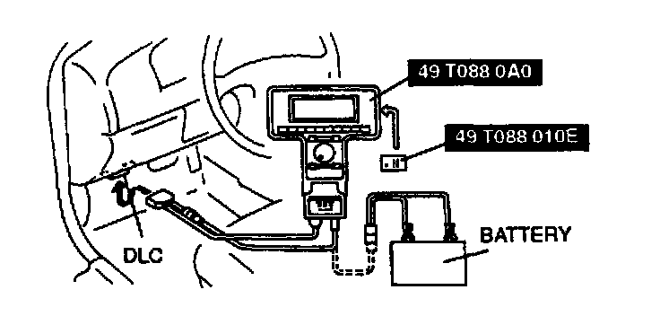
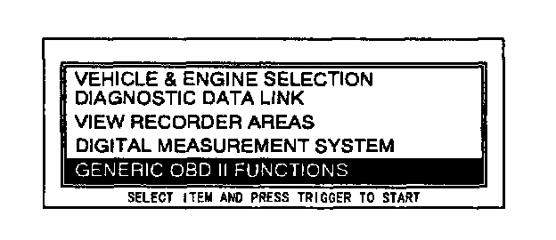
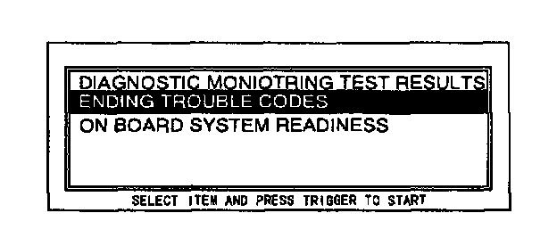

Pending Trouble Code Access Procedure
NOTE:- This is a generic function.
- Start engine and keep it running. If engine won't start, turn the ignition switch on during the procedure.

1. Perform the necessary vehicle preparation and visual inspection. Hook the NGS Tester up to the vehicle.

2. Move the cursor to GENERIC OBD II FUNCTIONS. Press the trigger key to enter this function.
3. Press CONT.

4. Turn the menu dial clockwise to scroll the screen. Move the cursor to PENDING TROUBLE CODES. Press the trigger key to enter this selection.
5. Press START.
6. Retrieve PENDING trouble codes.
NOTE:
- If the "NO DTCs AVAILABLE/NO RESPONSE" message is shown on the screen, be sure to run the PID DATA MONITOR in GENERIC OBD II FUNCTIONS and confirm that the "LINK COMMUNICATION ERROR. MODULE NOT RESPONDING. CHECK IGNITION STATUS AND CABLE CONNECTIONS" message does not appear.